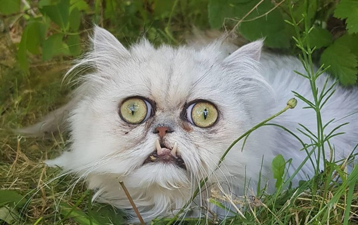
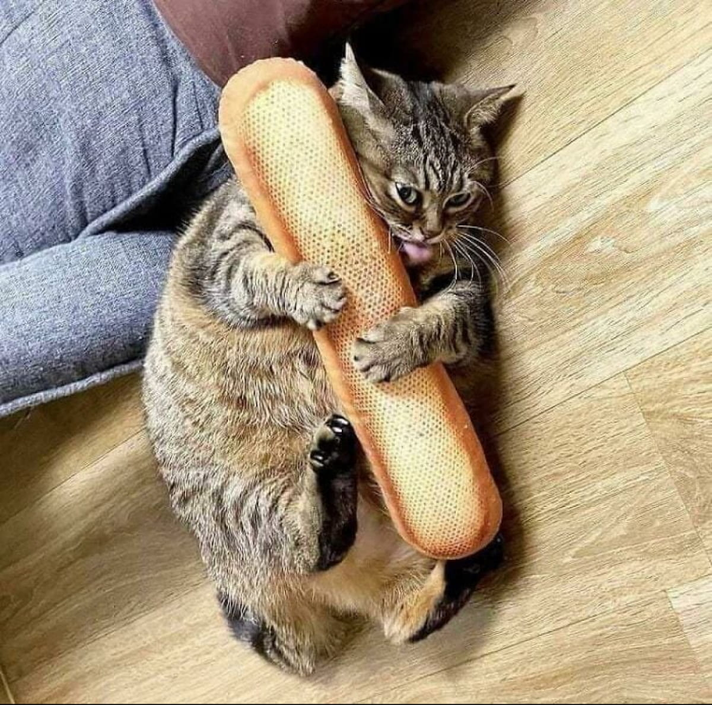
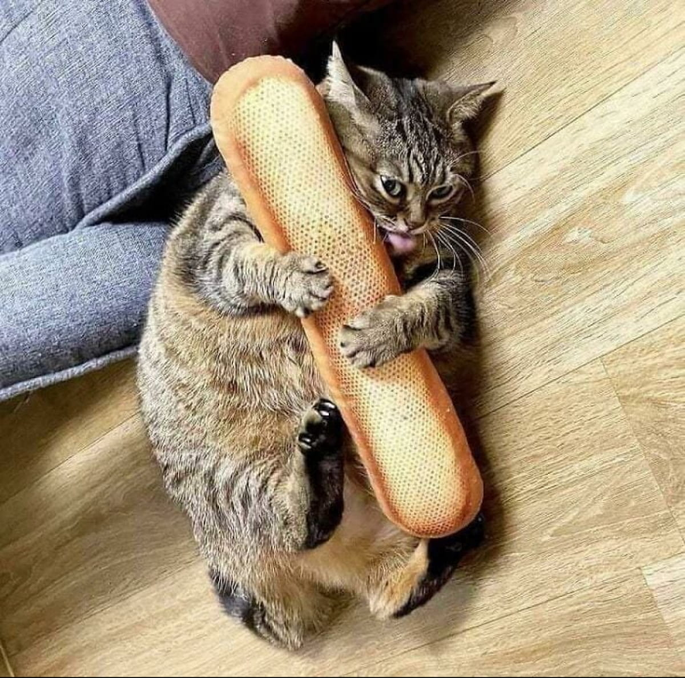

интересные факты про котов
В каждом кошачьем ухе находится более чем 30 мускулов.
В среднем, коты спят по 16-18 часов в день, что составляет более 70% кошачьей жизни.
Кошки не чувствуют вкуса сладкого.
Хотя черный кот — символ неудачи во многих странах, в Великобритании и Австралии их считают символом удачи.

смешные коты
мяуканье кошки
памятник кошки
 милый котик
милый котик
 злой рыжий кот
злой рыжий кот
 очень пушистый кот

кот украл батон
очень пушистый кот

кот украл батон